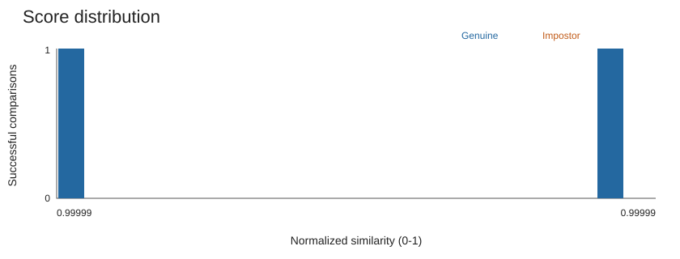

Status: Results available.
Each enrolled image is saved as a template. Higher scores mean more similar fingerprints. With multiple models, the best score is used. Scores are not match probabilities.
database=/Users/mhlee/Library/CloudStorage/OneDrive-인하대학교/[인하대] 수업자료/Advanced_OOP/FinalProject/build/data/original/FVC2000_DB3_B weights_folder=/Users/mhlee/Library/CloudStorage/OneDrive-인하대학교/[인하대] 수업자료/Advanced_OOP/FinalProject/models/run_check_20261119_013608 timeout_ms=0 concurrency=1 comparison_type=Both template_format=fingerprint-probability-template-v2 encoder_embedding_dim=512 template_output_dim=30 template_values=softmax ID probabilities; serialized bytes include model identity and labels aggregation=maximum successful model score calibration_note=Known-ID validation cutoff for the loaded models' Best score; not an independent-test guarantee. validation_recommended_threshold=0.99929999999999997 report_metrics=FTE (%); REJ genuine (%); REJ impostor (%); FMR (%); FNMR (%); EER (%); EER* (%); ZeroFMR (%); ZeroFNMR (%); FMR100 (%); FMR1000 (%); Enrollment time (ms); Matching time (ms); Genuine time (ms); Impostor time (ms); Mean template size (bytes); Max template size (bytes) genuine_rule=All eligible images impostor_rule=All eligible images
Genuine (same finger): score >= threshold = PASS, below = MISS (false rejection). Impostor (different fingers): score < threshold = REJ (correct rejection), otherwise = FA (false acceptance). Genuine threshold: 0.9993; Impostor threshold: 0.9993. ERR means inference failed without a score.
| Model ID | Weight file | Load status |
|---|---|---|
| fvc2000_db3 | /Users/mhlee/Library/CloudStorage/OneDrive-인하대학교/[인하대] 수업자료/Advanced_OOP/FinalProject/models/run_check_20261119_013608/fvc2000_db3.bin | Ready |
| fvc2002_db3 | /Users/mhlee/Library/CloudStorage/OneDrive-인하대학교/[인하대] 수업자료/Advanced_OOP/FinalProject/models/run_check_20261119_013608/fvc2002_db3.bin | Ready |
| fvc2004_db1 | /Users/mhlee/Library/CloudStorage/OneDrive-인하대학교/[인하대] 수업자료/Advanced_OOP/FinalProject/models/run_check_20261119_013608/fvc2004_db1.bin | Ready |
| combined | /Users/mhlee/Library/CloudStorage/OneDrive-인하대학교/[인하대] 수업자료/Advanced_OOP/FinalProject/models/run_check_20261119_013608/combined.bin | Ready |
| Metric | Value |
|---|---|
| FTE (%) | 0 |
| REJ genuine (%) | 0 |
| REJ impostor (%) | 0 |
| FMR (%) | 0.138889 |
| FNMR (%) | 11.4286 |
| EER (%) | 3.05556 - 3.05556 |
| EER* (%) | 3.05556 - 3.05556 |
| ZeroFMR (%) | 11.4286 |
| ZeroFNMR (%) | 3.05556 |
| FMR100 (%) | 8.57143 |
| FMR1000 (%) | 11.4286 |
| Enrollment time (ms) | 413.533 |
| Matching time (ms) | 322.574 |
| Genuine time (ms) | 416.662 |
| Impostor time (ms) | 313.427 |
| Mean template size (bytes) | 1081.25 |
| Max template size (bytes) | 1082 |
FMR uses the Impostor threshold; FNMR uses the Genuine threshold. FMR/FNMR use planned-pair denominators; failed genuine attempts count as nonmatches. EER shows observed-threshold bounds; EER* uses successful pairs only. EER and curves sweep a common threshold independently of the entered thresholds.



Enrollment images | Comparison pairs in saved order | All metrics | Run settings | Selected models | Per-model scores and failures
Only selected metrics appear in this report. CSV files keep all metrics and raw results. Self-image comparisons are excluded.